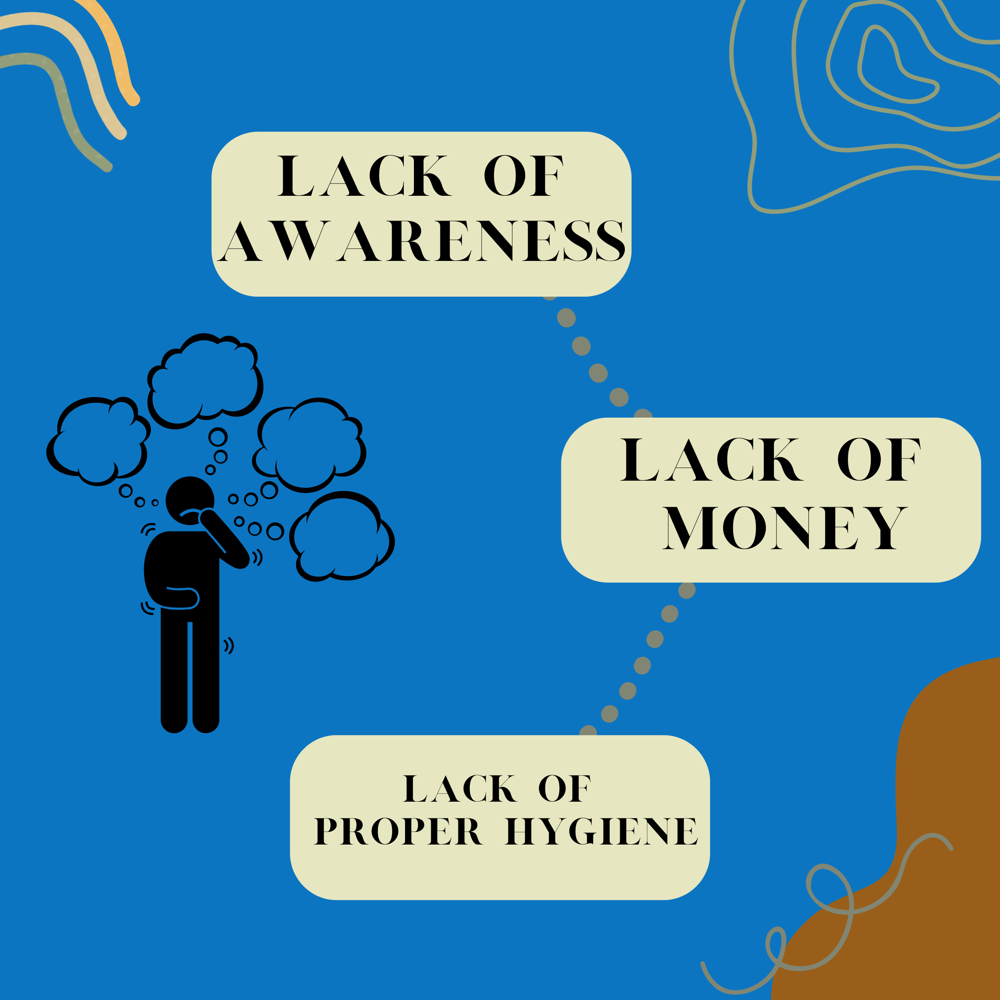

Background and Significance
Background
In the Philippines, a number of orphanages have been formed in order to meet the requirements of children who are considered to be abandoned or neglected, one of which is an institution called SMAC.SMAC is a non-government children's institution that is a non-stock and non-profit organization focusing on abandoned, neglected, and orphaned children's needs for immediate medical and health care services. SMAC also supports the future of each kid to improve their lives through education and restore their dignity as people by providing them with a home but also struggling to pay the number of bills for the institution. That’s why SMAC is relying on donors such as the Ateneo de Davao University Junior High School Community and plenty of generous people to help support their basic needs and help them provide for the needs of the children in the institution. Based on the data we’ve gathered, the three key problems that SMAC is facing are lack of money, lack of proper hygiene, and lack of awareness.
Significance
 The three problems identified are connected because a lack of awareness results in less money, and less money makes it harder to meet children's needs, which results in poor hygiene. The institution's financial stability is crucial since it depends on it to maintain its facilities, cover its costs, and provide for the physical, mental, medical, and educational needs of the children. The hygiene of the kids placed in the institution is essential because they all share a home. Every child must practice appropriate cleanliness and health care practices to avoid being ill and spreading disease to others. They also need to get more awareness so that they can attract more sponsors and donors to help them in providing the needs of the children. It is our duty to help them to promote resilience and empowerment while giving every child of SMAC a better future. Every kid needs a safe place to live, a chance to learn and go to school, plenty of nutritious food to eat, and people around them who will provide them with love and support. Many young children who ought to be shielded from violence, neglect, and sickness are instead battling for survival on a daily basis. We believe that with our help, children will have all they need to grow up physically, spiritually, and mentally happy.
Group Resources & Project Proposal
Group Resources
In addition to using social media, our group is skilled in generating posters and infographics from prior school years. We can use such knowledge and skills to raise awareness. Our group members and friends are human resources that we can mobilize to help us with our project.
Project Proposal
 The solution that we came up with is to sell cookies to students, teachers, and workers. Our goal is to solve SMAC's financial problems as well as the other two problems by selling cookies all across the campus. We can create posters and social media postings about our goods and attract more attention using our skills in creating posters and social media accounts. While we are selling our product, we will explain to our customers why we are doing this in order to raise awareness. This would allow us to earn more money and be a bigger help to SMAC. Additionally, we can seek the support of our friends and family to improve the outcome. We will be selling the cookies for 15 pesos each. Half of the money that we earn will be donated to SMAC and the rest to buy hygiene products and school supplies for the children. We will start this project on November 8 and end on December 3. Our goal is to earn 3k per week and more. 50% of the proceeds will be donated to SMAC, 45% for hygiene products and school supplies, and 5% will be left to us.
We hope that with our support, we will be able to give the children of SMAC a chance to grow up healthy in all aspects.
The solution that we came up with is to sell cookies to students, teachers, and workers. Our goal is to solve SMAC's financial problems as well as the other two problems by selling cookies all across the campus. We can create posters and social media postings about our goods and attract more attention using our skills in creating posters and social media accounts. While we are selling our product, we will explain to our customers why we are doing this in order to raise awareness. This would allow us to earn more money and be a bigger help to SMAC. Additionally, we can seek the support of our friends and family to improve the outcome. We will be selling the cookies for 15 pesos each. Half of the money that we earn will be donated to SMAC and the rest to buy hygiene products and school supplies for the children. We will start this project on November 8 and end on December 3. Our goal is to earn 3k per week and more. 50% of the proceeds will be donated to SMAC, 45% for hygiene products and school supplies, and 5% will be left to us.
We hope that with our support, we will be able to give the children of SMAC a chance to grow up healthy in all aspects.